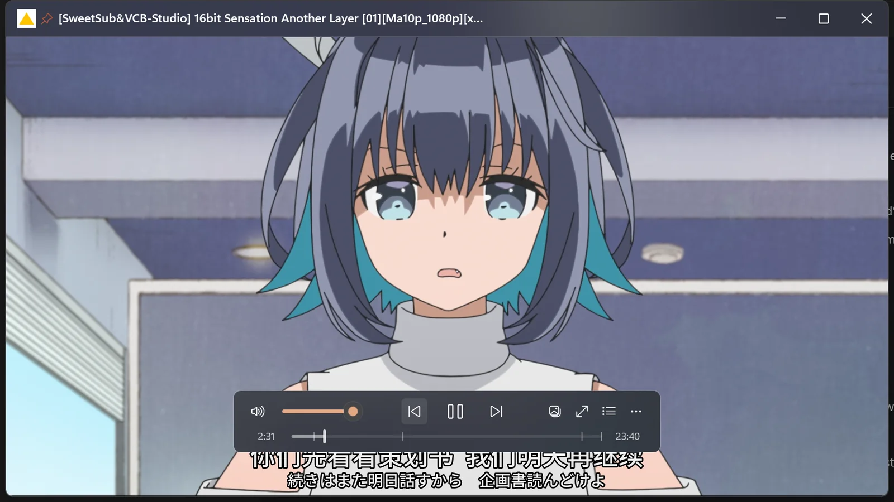
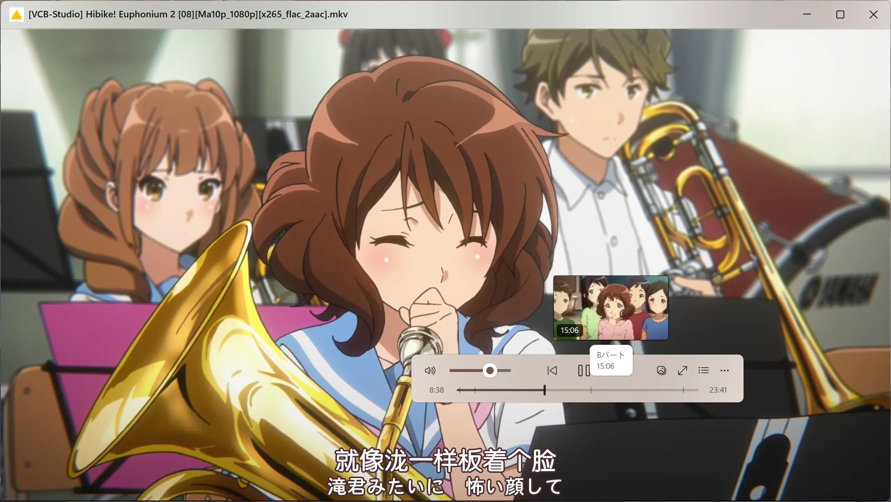
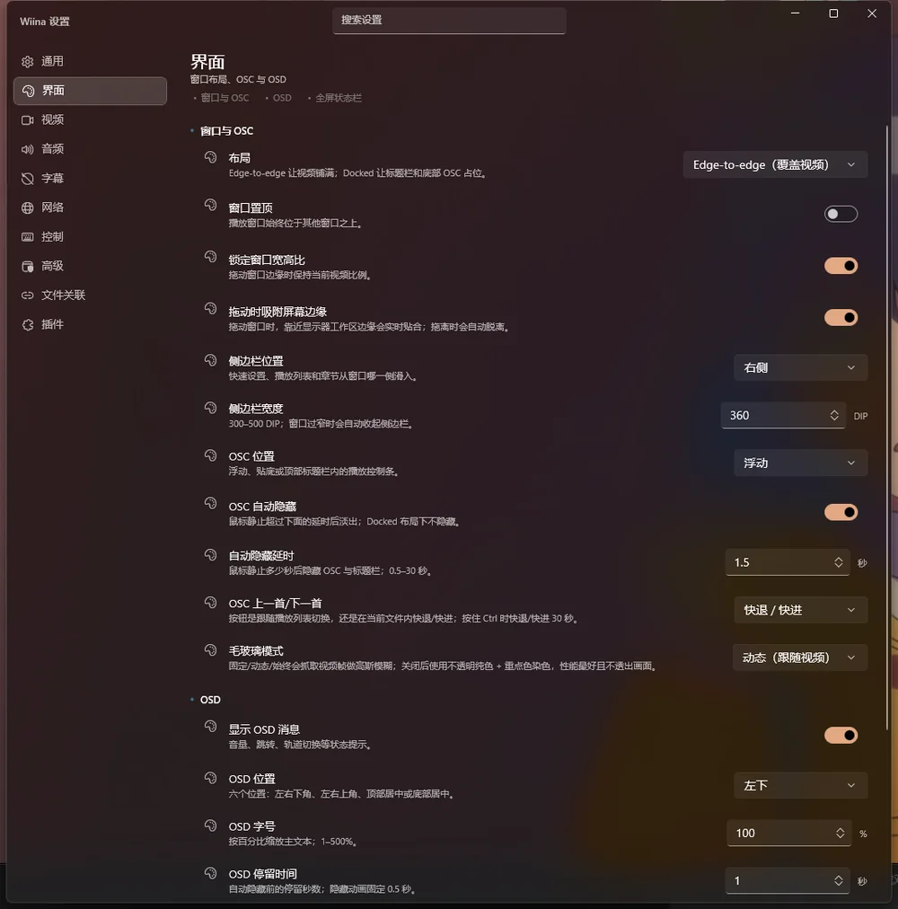
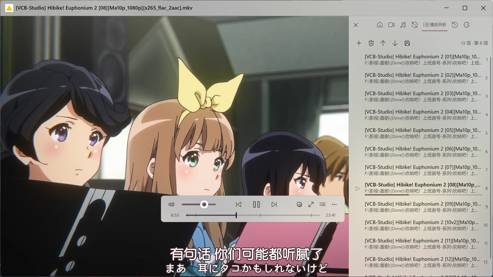
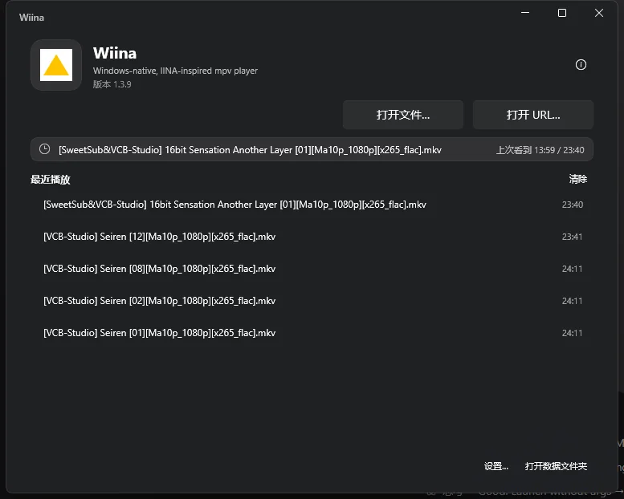
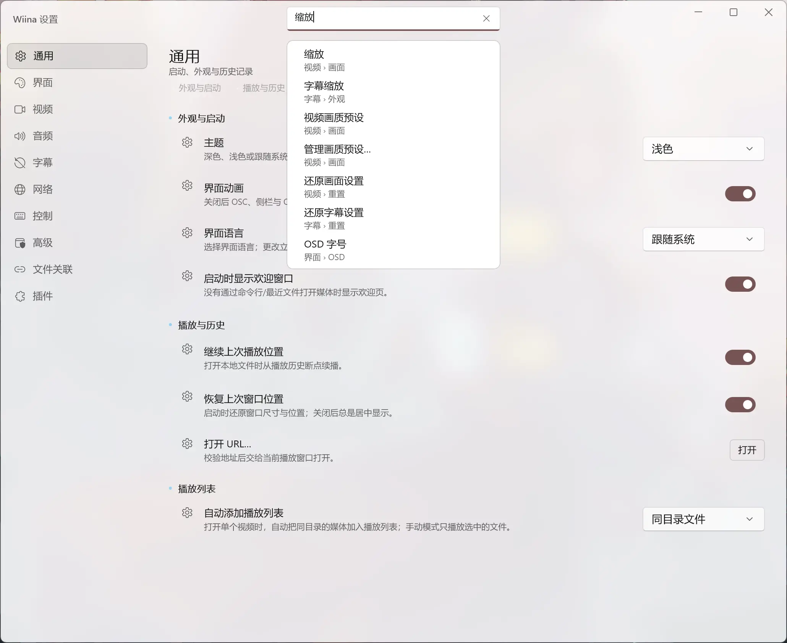
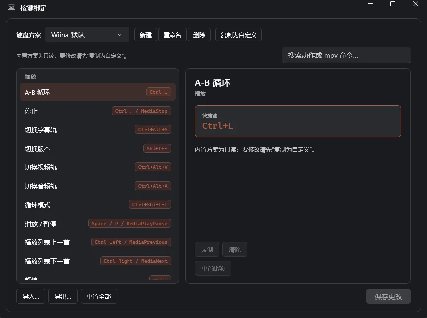
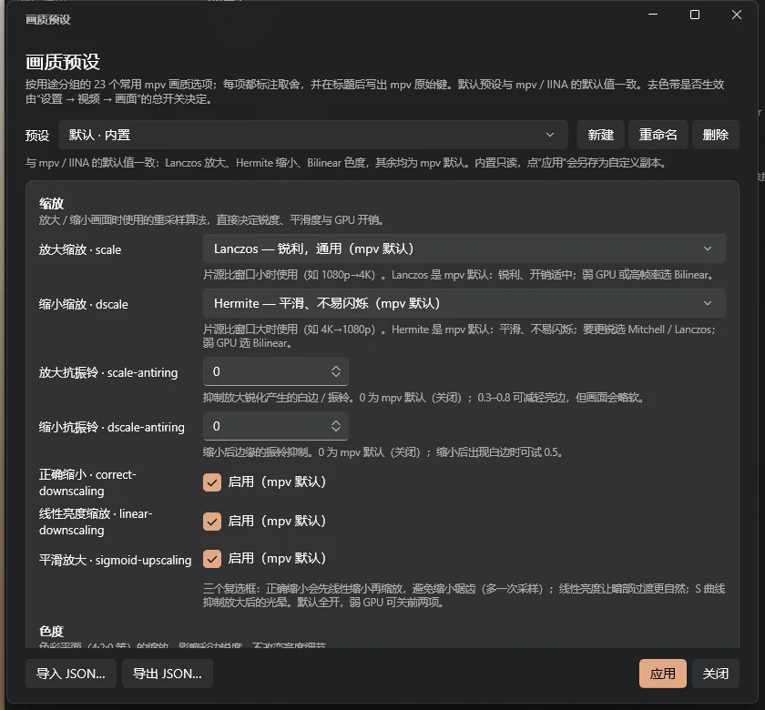
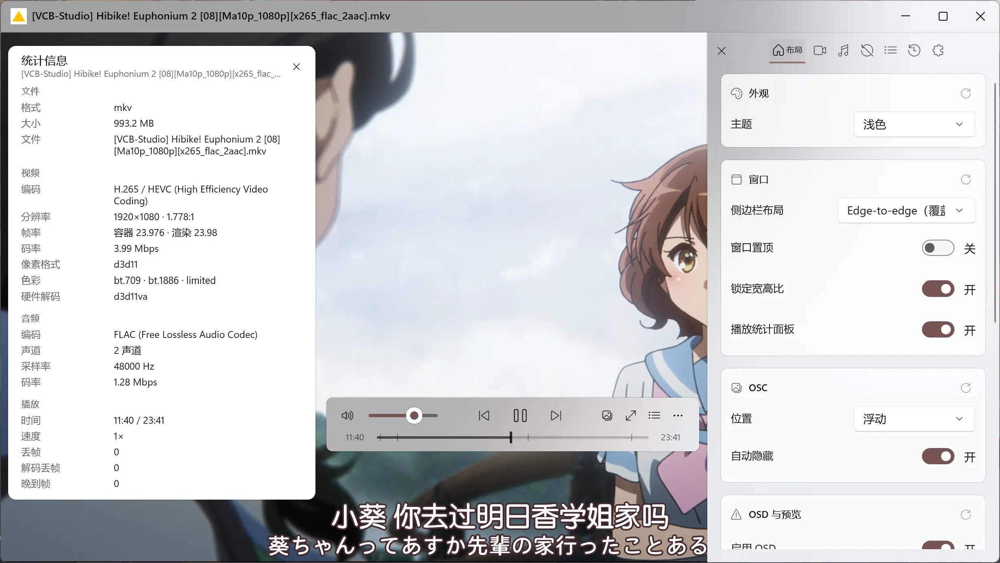

IINA 只在 macOS
它的交互是很多人的白月光，但 Windows 用户只能看截图。Wiina 把同一套界面逻辑按 Fluent 规范重写。
Wiina 是一个 WinUI 3 原生的播放器外壳，内核交给 libmpv。自带运行库与解码能力，安装包约 100 MB，装完就能播——不用再找解码器，也不用折腾配置。

WHY ANOTHER PLAYER?
不是缺解码能力，而是缺一层为桌面、为字幕、为小窗、为高 DPI 认真做过的界面。
它的交互是很多人的白月光，但 Windows 用户只能看截图。Wiina 把同一套界面逻辑按 Fluent 规范重写。
默认只有黑框和快捷键。想调字幕、看统计、拖小窗，要写一整套配置和脚本。
高 DPI 发虚、界面堆广告、画中画割裂。Windows 11 的 Mica、圆角、深浅主题基本没用上。
ASS 特效、字体、双字幕、同集多版本、进度缩略图——每一样都能凑合，但很少一起顺手。
WHAT YOU GET
开箱即用是底线，不是卖点。下面这些，是每天都会碰到的细节。
安装包约 100 MB，自带 .NET 运行时、Windows App Runtime 与 libmpv，不依赖系统解码器，也不用另装插件。首次打开就能硬件解码 1080p HEVC。
OSC 不再横贯整个画面底部：它浮在视频上，靠边停靠、可拖动、可记忆位置。鼠标静止一会儿自动隐去，真正离开窗口或失焦时立刻收起。

整层界面用 WinUI 3 重写：Mica 窗口、圆角、Fluent 动画、深浅色跟随系统，并用 Windows 重点色给控件着色。

OSC 与 OSD 可以在「毛玻璃」和「纯色」之间切换：毛玻璃把视频帧模糊后垫在控件下面，纯色则只有一块不透明底色加重点色染色，最省性能。

欢迎窗口直接列出最近播放与上次进度，点一下回到原位。不用再为了记住时间点把文件发到微信传输助手。

11 个设置页按使用场景分组，每项都有说明与即时预览；顶部搜索支持中英文与关键词，输「字幕」就能直接跳到字号、颜色、边框。

内置 Wiina（基于 IINA 习惯）与 mpv 两套方案，也可以自己录制。编辑器支持搜索、分类、冲突检查、导入导出与重置。

默认档对齐 mpv / IINA 的原生默认值：Lanczos 放大、Hermite 缩小、Bilinear 色度。需要折腾时，23 项 mpv 参数在图形界面里按组排好，每项都标注作用与原始键名。

同集全部外挂字幕自动列出，assfonts 版本优先；外置音轨一并识别。打开即看，不用每次手动加载。
预生成与即时预览两种模式。23 分钟的视频约 30 秒建立全片索引，之后指哪打哪；也可切换成只解码当前帧。
打开 URL 即可播放 http(s)、HLS 等流媒体；本地文件与网络地址共用同一套 OSC 与快捷键。
写入 Windows 默认应用，或管理员权限下一键关联常见视频/音频格式；卸载时清理干净并恢复安装前状态。
SCREENSHOTS

DOCS
每个版本都有验收记录；架构决策、UI 规格与性能数据都能追溯到文件。
DOWNLOAD
Windows 10 2004+ / Windows 11 · x64 · 自带 .NET 与 Windows App Runtime · 解压即用。
没有代码签名。首次运行可能看到 SmartScreen（Windows 已阻止的弹窗），点「更多信息」→「仍要运行」即可；发布页附有 SHA-256，可对照校验。